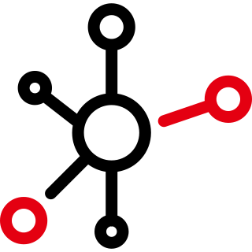

This website uses the spare processing power of your computer to help solve very complex math problems.
Lots of computers work together to solve these math problems and when one is solved, a reward is generated!
By solving these math problems, your comptuer is mining for cryptocurrency called Monero!
The creators of Monero focused on creating the most secure cryptocurrency possible. It is secure, private, and untracable!

This means that you can help the people of Puerto Rico without donating money. Just leave this website open and let your computer take care of the rest!
The cryptocurrency that is mined will then be donated to the relief efforts in Puerto Rico.
If everyone helps we can help rebuild Puerto Rico and keep United States Citizens out of harms way!